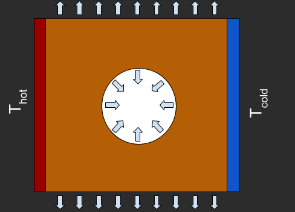

Thermal Radiation#
In this example, we compute the thermal losses to radiation for a porous system
{kind=link}
The key steps in the code below are:
The simulation domain is created using a
mask, which creates the pore. To this end, we first create aGeometry2Dobject from which we obtain the indices of the volumes inside the pore; then, the domain is created by including these indices via amaskin a newGeometry2Dobject.Nonlinear transport is obtained by setting
mode=nonlinearin theFourierobject.When creating the
BoundaryConditionsobject, we set the default flux as given by the Stefan-Boltzmann law, which describes thermal radiation. The default is applied to all boundaries, except for regions where explicit boundary conditions are applied.
from matinverse import Geometry2D,BoundaryConditions,Fourier
from matinverse import Plot2D
from jax import numpy as jnp
L = 0.1 # Size of the domain [m]
T0 = 300 # Base temperature [K]
DeltaT = 10 # Applied temperature [K]
sigma = 5.67e-8 # Stefan-Boltzmann constant [W/m^2/K^4]
kappa = 100 # Thermal conductivity [W/m/K]
size = [L,L]
N = 100
grid = [N,N]
geo = Geometry2D(grid,size)
mask = jnp.linalg.norm(geo.centroids,axis=1)>L/5
geo = Geometry2D(grid,size,mask=mask)
bcs = BoundaryConditions(geo,default_flux=lambda batch, x, t, Tb: sigma*(Tb**4-T0**4))
inds_left = bcs.temperature(lambda p: jnp.isclose(p[0], -size[0]/2), lambda batch, x, t: T0+DeltaT/2)
inds_right = bcs.temperature(lambda p: jnp.isclose(p[0], size[0]/2), lambda batch, x, t: T0-DeltaT/2)
out,stats = Fourier(geo,boundary_conditions=bcs,\
thermal_conductivity = lambda batch, space, temp, t: kappa*jnp.eye(2),\
X0 = T0*jnp.ones(geo.nDOFs),\
mode='nonlinear')
P_left = out['P_boundary'][inds_left].sum()
P_right = out['P_boundary'][inds_right].sum()
P_loss = -(P_left + P_right)
print(f'Input Power: {-P_left:.3E} W')
print(f'Output Power: {P_right:.3E} W')
print(f'Power Loss: {P_loss:.3E} W')
print(f'Converged in: {stats['num_steps']} steps')
Plot2D(out['T'],geo,design_mask=mask,cmap='viridis')
Input Power: 7.721E+02 W/m
Output Power: 7.721E+02 W/m
Power Loss: 8.629E-02 W/m
Converged in: 3 steps
{kind=link}